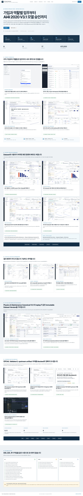
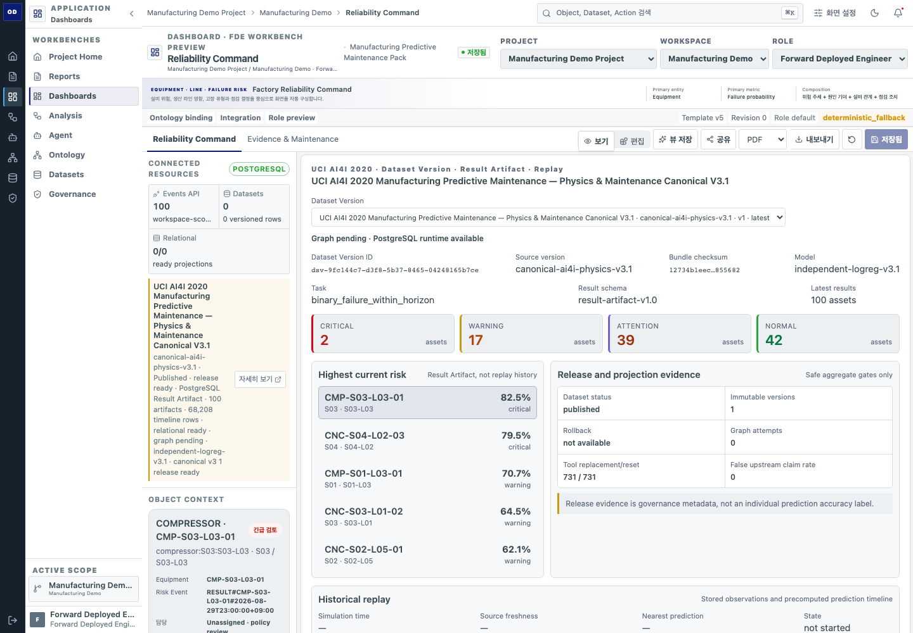
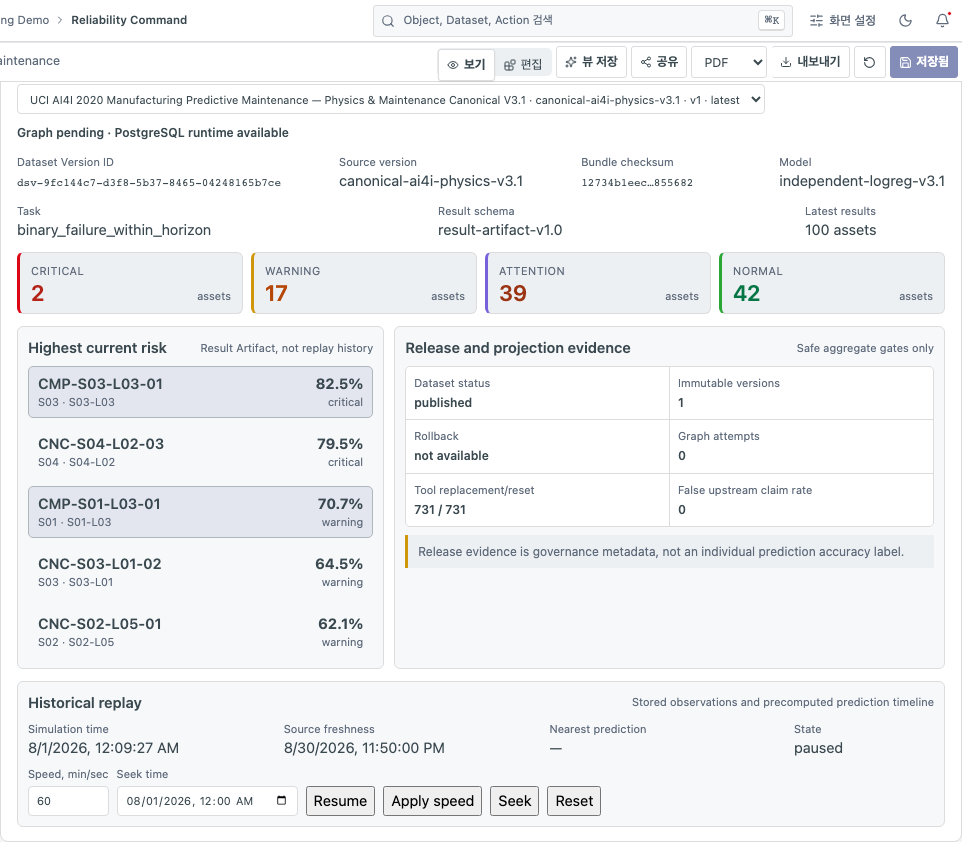
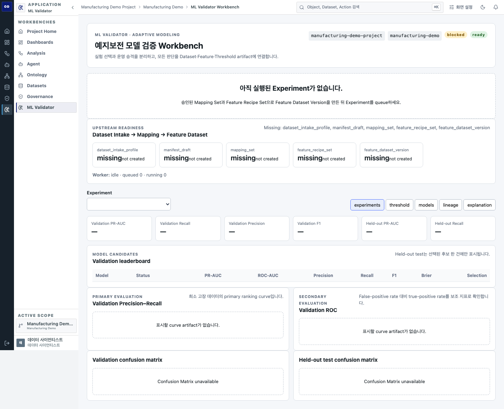
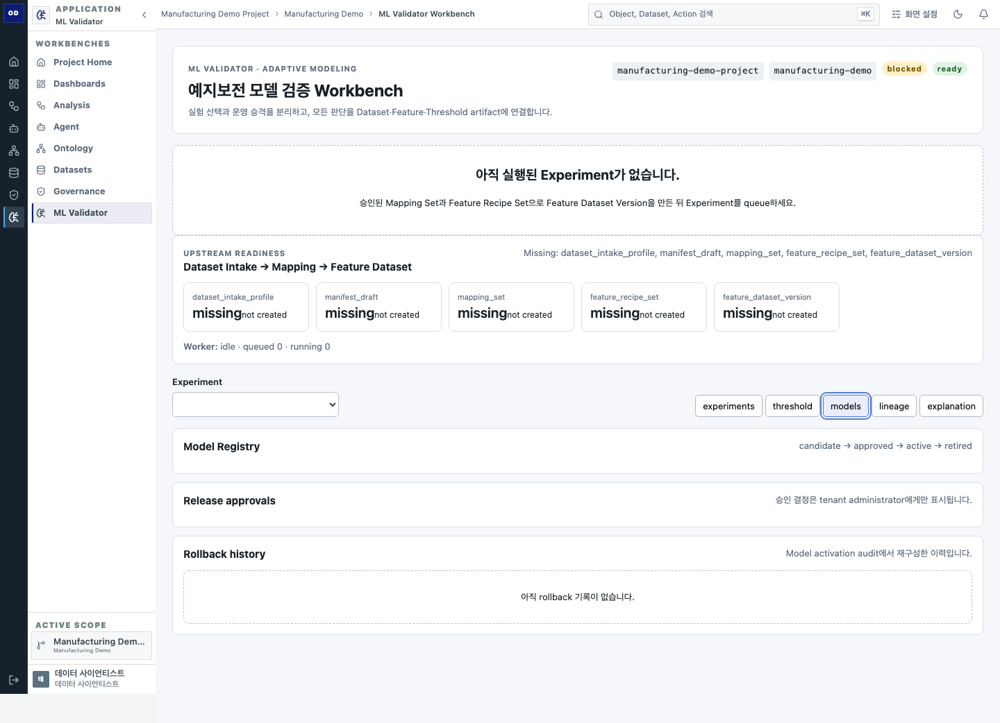
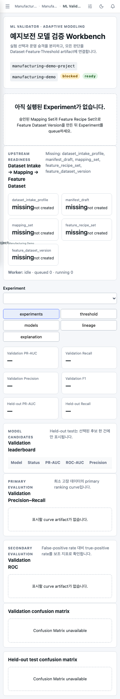
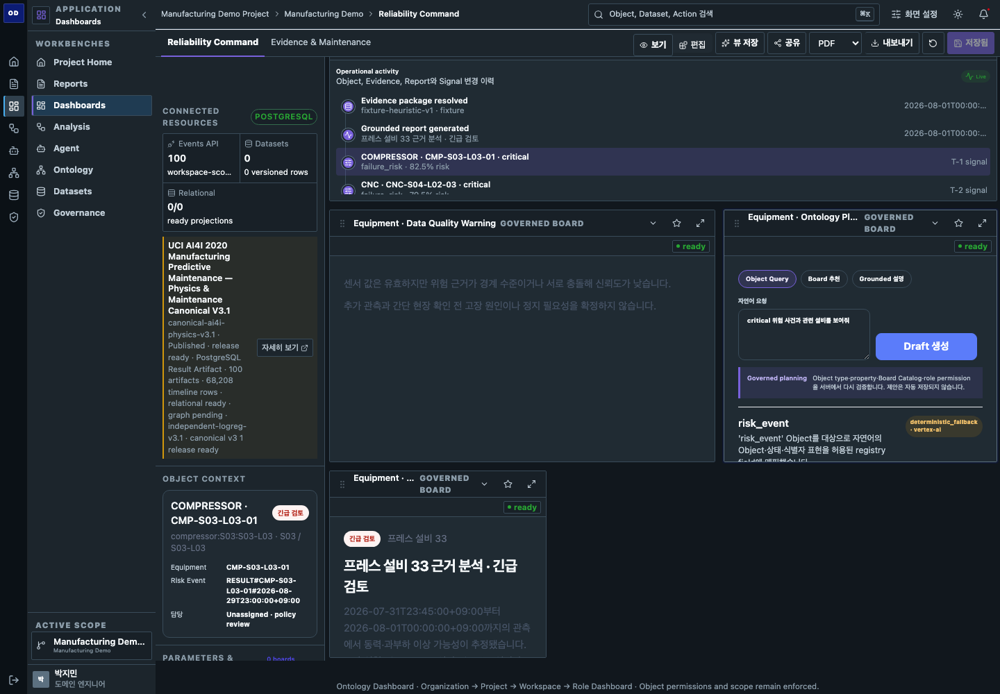

가입 승인, RBAC, Project·Workspace scope와 역할별 landing.
가입과 역할별 업무부터
AI4I 2020 V3.1 모델 승인까지
기존 Ontology Dashboard 선행 프로토타입과 UCI AI4I 2020 Manufacturing Predictive Maintenance — Physics & Maintenance Canonical V3.1·Adaptive Modeling 업그레이드를 하나의 제품 흐름으로 통합했습니다. Identity, Dataset, Ontology, Analysis, Dashboard, Report, Model과 governed action을 조직·Project·Workspace·역할별로 연결합니다.
8업무 역할3Dataset 적응형 사례17통합 기능 캡처672,553V3.1 canonical rows
team-share-adaptive-v3.1-postgresql-20260805
전체 프로젝트 화면 구성
아래 이미지는 가입·권한·역할별 화면·Dataset 적응형 UI·개인화·Analysis·Ontology·V3.1 runtime·ML release governance가 모두 포함된 최신 인터랙티브 Story 전체 캡처입니다.

프로젝트를 이해하는 여섯 단계
Schema, 품질, provenance와 immutable version identity.
Object·Link·Action과 ObjectSet 기반 업무 context.
Typed lineage, experiment, threshold와 explanation artifact.
Dataset·역할·사용자에 따라 달라지는 시각화와 문서.
승인, 감사, activation과 rollback을 분리한 실행 흐름.
기본 Project Dashboard는 PostgreSQL V3.1 Dataset Version을 사용합니다
Canonical release가 기본이고 Gold Fixture는 legacy comparison과 offline regression fallback으로만 남습니다.
dsv-9fc144c7-d3f8-5b37-8465-04248165b7ce · canonical-ai4i-physics-v3.1 · independent-logreg-v3.1 · 100 Result Artifacts · 68,208 timeline rows · relational ready.
2개 local fixture Dataset과 15개 rows는 legacy comparison, offline fallback, fixture regression과 기존 `/team-share` 기록에만 유지합니다.
Physics & Maintenance Dataset Version과 Result Artifact를 운영 화면에서 확인합니다
현재 결과와 replay를 구분하고 provenance, graph readiness와 precomputed prediction timeline을 함께 확인합니다.

AI4I 2020 V3.1 RUNTIME
운영 Dashboard와 release evidence
Dataset Version, checksum, model, task, Result schema와 위험 상태를 한 화면에서 확인합니다.

RESULT ARTIFACT REPLAY
저장된 센서와 prediction timeline 재생
새 센서를 생성하거나 모델을 재학습하지 않고 canonical source를 시간 순으로 재현합니다.
현재 ML Validator의 blocked 상태와 다크모드 사용성을 함께 검증합니다
Live upstream artifact가 없다는 사실, Model Registry empty state, 승인 역할 분리와 역할별 dark surface 대비를 실제 화면으로 보여줍니다.

ML VALIDATOR
5개 upstream prerequisite 미비
Intake, Manifest, Mapping, Recipe, Feature Dataset이 없으므로 Experiment를 시작하지 않고 blocked 이유를 표시합니다.

MODEL GOVERNANCE
Model Version 0 · self-approval 차단
아직 승인·활성화할 모델은 없지만 ML Validator와 Tenant Admin 책임 분리 계약을 유지합니다.

RESPONSIVE
모바일에서도 blocked 이유 보존
390px에서도 가로 overflow 없이 필요한 upstream 단계를 확인합니다.

DARK MODE REGRESSION
Runtime과 Planner 내부 surface
실효 배경 luminance 0.18 미만과 텍스트 대비 4.5:1 이상을 역할별 실제 화면에서 검사합니다.
준비되지 않은 모델 성능을 성공처럼 표시하지 않습니다
현재 공유 서버의 실제 API 상태입니다. Controlled E2E metric은 회귀 테스트 evidence로만 문서에 분리합니다.
Dataset Intake부터 Feature Dataset까지 upstream artifact 미비.
실행·leaderboard·threshold 결과가 아직 없습니다.
Model Registry는 실제 empty state를 표시합니다.
요청·승인·activation이 없고 self-approval은 차단됩니다.
완료와 남은 작업
완료
- 가입 승인·RBAC·역할별 업무 화면
- Dataset 적응형 UI·개인화·Analysis·Ontology
- PostgreSQL V3.1 기본 Dashboard·Result Artifact·Replay
- 672,553 rows, 100 artifacts, 68,208 timeline rows
- Governed intake·mapping·feature 계약
- ML blocked/empty/error 상태와 역할 분리
- Dark-mode surface와 대비 회귀
검토 필요
- 현업 Recall·FN/FP 비용
- Feature의 물리 의미
- Synthetic metric 발표 범위
- Production proxy 정책
추가 작업
- Neo4j credential·Project 3 복구와 graph projection
- Live Modeling upstream artifact·worker
- Production Redis·OIDC·OTLP
- S3/GCS·calibration·drift·outcome artifact